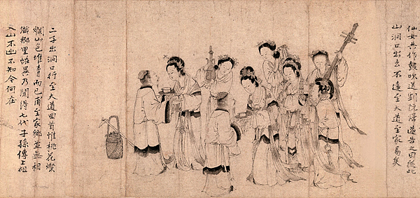

劉阮神仙交媾與洞穴意象
桃子因其形狀和顏色而像徵女性生殖器。這種觀念自古以來就在中國和日本廣為流傳。因此，當桃子出現在關於男人和女人的故事中時，無論是在民間故事、小說或戲劇中，它們通常都是為了讓人們意識到這種性聯想。在仙遊記中，凡人誤入仙境後會得到某種娛樂，而對仙人來說，這其中就包括性方面的享受。他們能獲得性滿足，在許多情況下，最後會與仙人結婚。
在中國民間故事中，許多與仙人或女神的婚姻是「包辦婚姻」。當男子與仙女初次見面時，會突然被告知“我一直在等你”、“你是我的女婿”，然後被迫結婚，毫無選擇餘地。對男子而言，這既令人欣喜又令人恐懼。就劉阮而言，《幽明錄》並未明確提及男女之間的性行為，但《續齊諧記》中收錄了完全相同的故事，並直接使用“修習夫妻之道”、“與仙女交合”等表述。據說，由於仙境的形制與子宮相似，因此前往仙境的故事具有性寓意。
傳說的仙境位於山洞中。這可能會讓人覺得仙境位於一個隧道狀的山洞外面，但實際上另一個世界存在於山洞「內部」。換句話說，它不在山的另一邊，而是山的深處。這個世界被稱為「洞天」。道家比喻為一個巨大的洞穴，而這個洞穴又比喻為人體。的確，透過內視鏡觀察人體內部，感覺就像探索洞穴，進入石灰岩洞穴則會產生遊覽人體內部的錯覺。如果我們把這種類比應用到《桃花源記》中：初極狹纔通人，復行數十步豁然開朗。這不正是子宮的寫照嗎？由於進入洞穴與子宮相同，因此，前往仙境的旅程也被解讀為性交的象徵。
仙境之旅的故事中，前往仙境的總是成年男性，也就是性生活活躍的男性。在流傳下來的故事中，沒有一個是關於老人、兒童或女性迷路的例子。由於性能力強的男人前往一個有絕世美女的地方，所以仙人的世界是一個能夠滿足男人慾望的享樂之地，而仙人則是能提供世俗中女人無法提及的美貌和無與倫比性愛的存在。此外，新婚夫婦的臥室被稱為“洞房”。按照習俗，新娘會先坐在洞房的床上，等待新郎進入。這也強化了洞穴與性交相關的意象。
